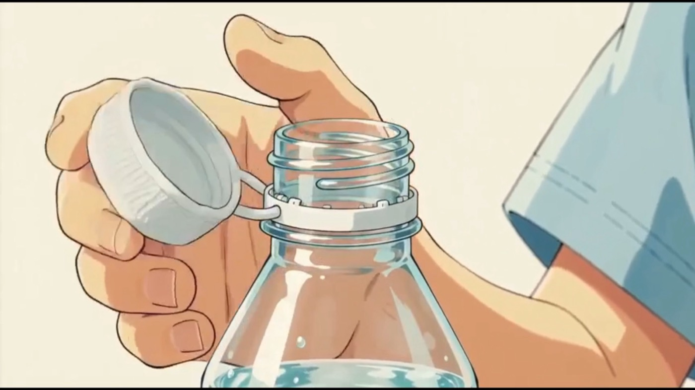
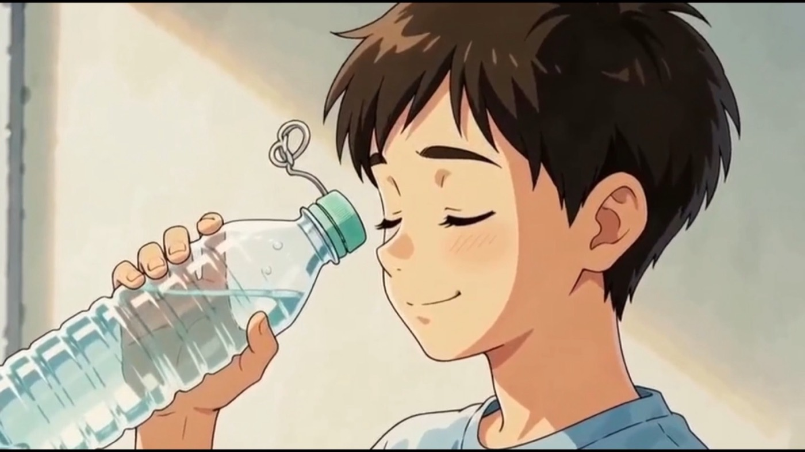
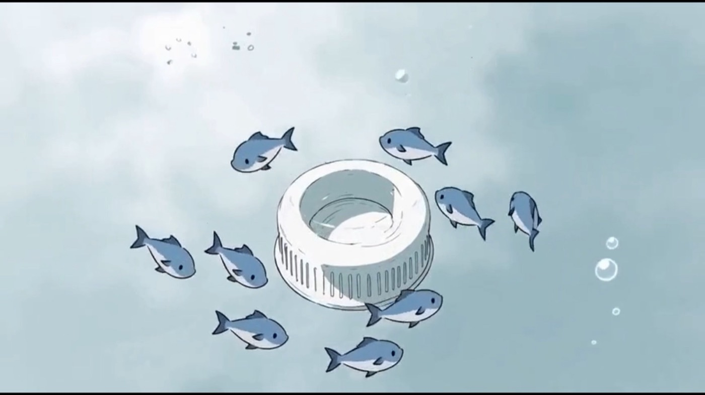
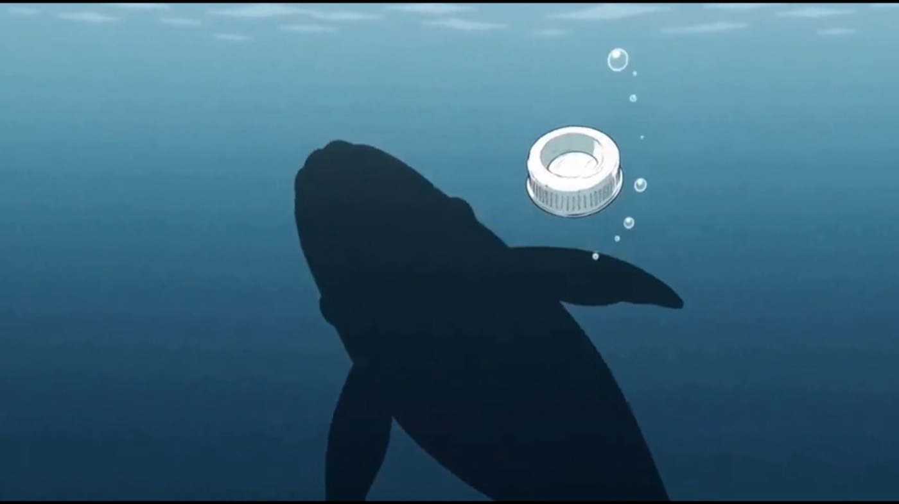
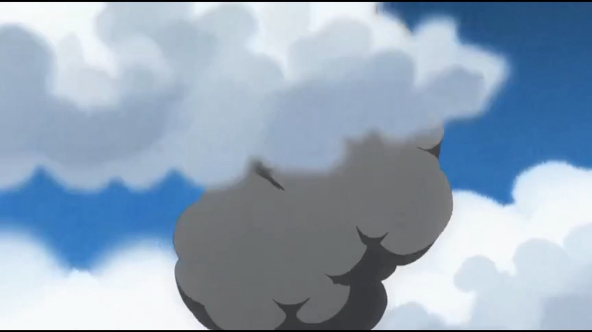
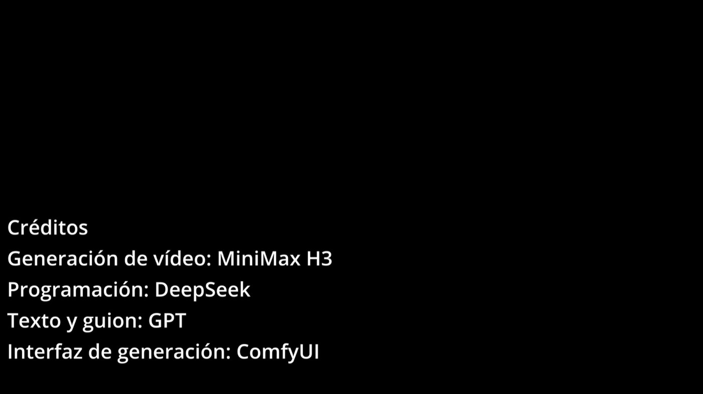

Corto animado · 50 segundos
El viaje de una tapa de botella
Una historia mínima sobre un objeto que casi nunca miramos — y que puede sobrevivirnos.
La película
Cincuenta segundos de un viaje muy largo
Del bolsillo de un niño al fondo del océano. Sin diálogo: solo imagen, sonido y el tiempo que tarda un objeto en desaparecer.
Capítulos
La película no tiene diálogo. Toda la narración es visual y sonora.
- Duración
- 00:50
- Resolución
- 1920 × 1080
- Sonido
- Sí, música
- Autoría
- JIANLIANG.Z
El viaje, fotograma a fotograma
Cinco estaciones de un objeto
de tres centímetros
La cámara se acerca todo lo posible para recordarnos la escala real del problema: lo pequeño no es lo insignificante.
-

0:05
La mano
Todo empieza con un gesto que hacemos mil veces al día. La tapa se abre, la mano apenas se detiene: nadie mira lo que acaba de soltar.
-

0:13
El agua
El agua no distingue entre paisaje y basura. Lo que para nosotros es un residuo de tres centímetros, para el mar es un objeto nuevo que acaba de llegar.
-

0:20
Los peces
Un objeto redondo y blanco que no pertenece a ningún cardumen. Flota, gira y se hunde despacio: el plástico no se disuelve, solo cambia de lugar.
-

0:26
La ballena
Del tamaño de una uña a la sombra de un gigante. La escala cambia en un plano: lo que pesa gramos puede llegar a donde no llega la luz.
-

0:33
El cielo
El viaje no termina en el fondo. Un tapón que se fragmenta vuelve a la superficie convertido en microplástico — y de ahí, a todo lo demás.
Lo que queda cuando el vídeo termina
Cuatro cifras para mirar dos veces
-
3cm
Lo que mide
El tamaño de una tapa estándar. Suficiente para obstruir el estómago de un ave marina.
-
1camión / min
El ritmo
Es la cantidad de plástico que llega al océano cada minuto, según el Foro Económico Mundial.
-
Siglos
El tiempo
Un tapón no desaparece: se rompe en fragmentos cada vez más pequeños que regresan a la cadena alimentaria.
-
Top 10
La frecuencia
Las tapas están entre los residuos que más aparecen en las limpiezas de playas de Ocean Conservancy.
Fuentes: World Economic Forum, Ocean Conservancy · ICC, PNUMA / UNEP. Cifras redondeadas de informes públicos; los enlaces llevan al original.
La parte que no sale en el vídeo
Cuatro gestos que deciden dónde acaba
Ninguno es heroico. Todos cuentan, porque el destino de una tapa se decide en los segundos siguientes a abrir la botella.
-
Lleva tu botella
La botella que no compras no necesita tapa. Una reutilizable ahorra cientos de tapones al año.
-
No la sueltes
Sujeta el tapón hasta encontrar una papelera. La mayor parte de la basura que llega al mar empieza en tierra.
-
Separa y recicla
Comprueba cómo recicla tu municipio: el tapón también se recupera, si llega separado y limpio.
-
Cuéntalo
Comparte la película. Una historia de cincuenta segundos viaja más lejos que un objeto de tres centímetros.
El viaje de esta tapa lo decidimos nosotros: dónde acaba y cuánto dura.
Créditos
Una película hecha en equipo con máquinas
Imagen generada, guion escrito y sitio programado. La intención —y la responsabilidad— son humanas.
- Dirección y arte
- JIANLIANG.Z
- Generación de vídeo
- MiniMax H3
- Guion y texto
- GPT
- Interfaz de generación
- ComfyUI
- Programación
- DeepSeek
